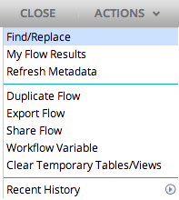
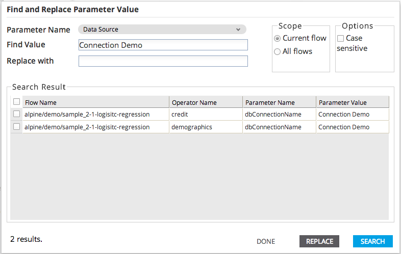

Find And Replace
Click on the Find/Replace button in the 'Actions' drop-down menu to open the Find and Replace dialog

The Find and Replace dialog allows the user to search for parameters with a given value and, if desired, replace that value with another value.
The user can search for values of Data Sources, Schema Names, Table Names, and Output Schemas.
- Options include:
- Scope: Specify the breadth of the search - either the currently open workflow or all of the user's Personal flows.
- Options - Case sensitive: If checked, the search will be case sensitive.
- Find value: Enter the value to find.
- Replace with: Optionally enter a value with which to replace a found.
- Click Search to perform the search (without replacing values).
- CLick Replace to replace found values with the specified replacement value.
- The results of the search will be displayed in the Search Result table.
